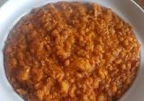
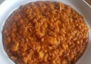

My Favourite meal
My favourite meal is Porridge Beans and fried plantain. Beans is one of the most popular and staple foods in Africas especially in Nigeria and the 4th most consumed after cassava, yam, and rice. Beans is majorly cultivated by majority of
farmers in northern parts of Nigeria such as Borno, Kano, Sokoto, Yobe, Gombe, and Zamfara. It has a Kidney shape and comes in different colour such as brown, red, dark red, black etc.
Ingredients for my favourite meal
Ingredients |
Measurements |
| Beans |
2 cups |
| onions |
2 sizable onions |
| Crayfish |
3 table spoons of grinded crayfish |
| Fresh tomatoes |
2 sizable fresh tomatoes |
| Fresh pepper |
7 seeds of fresh pepper |
| water |
3 litres of water |
| Palm oil |
A small soup bowl of Palm oil |
| Groundnut oil |
A small soup bowl of groundnut oil |
| Salt |
Half tablespoon of salt |
| Maggi |
2 cubes of knorr maggi |
| Ripe plantain |
4 sizable ripe plantain |
Methods to prepare my favourite meal (Beans)
- Remove unwanted particls in the beans by picking tem out.
- Wash beans with salt and put in a cooking pot. Add some water to it to boil up for about 5 to 10 minutes to parboil.
- Drain out parboiled beans water, wash, and put into a cooking pot.
- Add 3 cups of water to the beans.
- Add chopped onions, maggi and pepper to the beans.
- Allow to boil for about 20 minutes or more. But ensure that the beans is so soft. Add some water if not tenderly soft.
- In a separate pot, fry your chopped onion, fresh tomatoes and pepper. Add some crayfish and a pinch of slt. Stir properly and allow to fry for like 2 mins.
- Pour sauce into the tenderly cooked beans pot, stir and allow to cook together.
How to prepare the fried plantain
- Wash the bark of the ripe plantain and slice plantain in a slant form after peeling off the back
- Add pinch of salt to sliced plantain and mix up.
- Add groundnut oil into a dried frying palm and allow to heat up and start frying your plantain.
 
